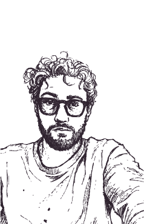

Designer multimédia focado em identidade visual, motion e experiências digitais.
O meu trabalho combina design editorial, animação, storytelling visual através de uma linguagem gráfica experimental e processo manual.
CONTACTOS
01. VISUAL
IDENTITY
Projetos focados em identidade visual, direção criativa e construção gráfica de marcas e eventos.
02. EDITORIAL
Projetos editoriais desenvolvidos através de composição, tipografia e narrativa visual.
03. MOTION
& ANIMATION
Exploração de animação, ritmo e narrativa através de imagem em movimento e linguagem audiovisual.
04. 3D
Projetos de modelação e visualização 3D focados na criação de ambientes e objetos universos visuais.
05. WEB DESIGN
Interfaces e experiências digitais desenvolvidas para ambientes web e mobile.